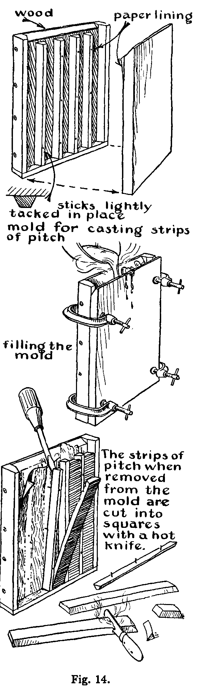
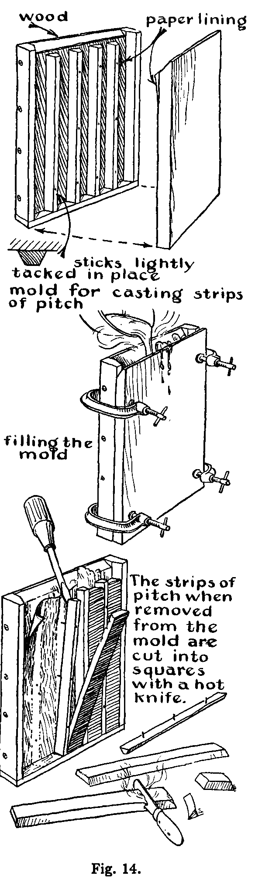
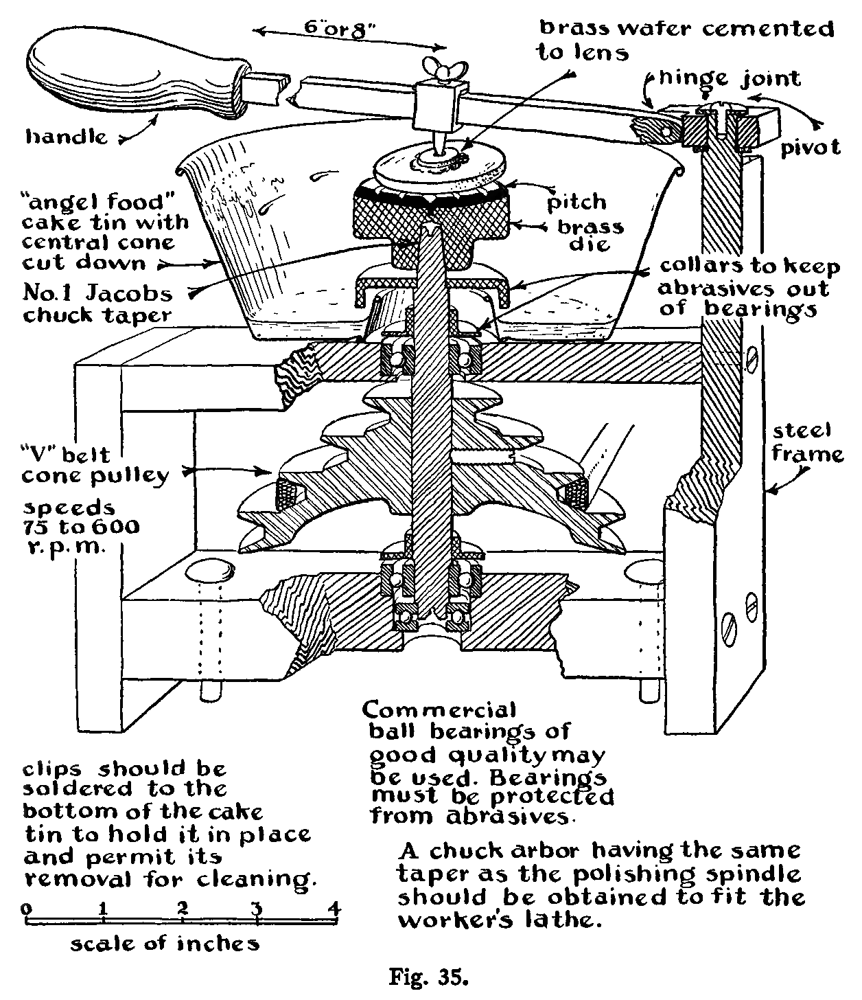
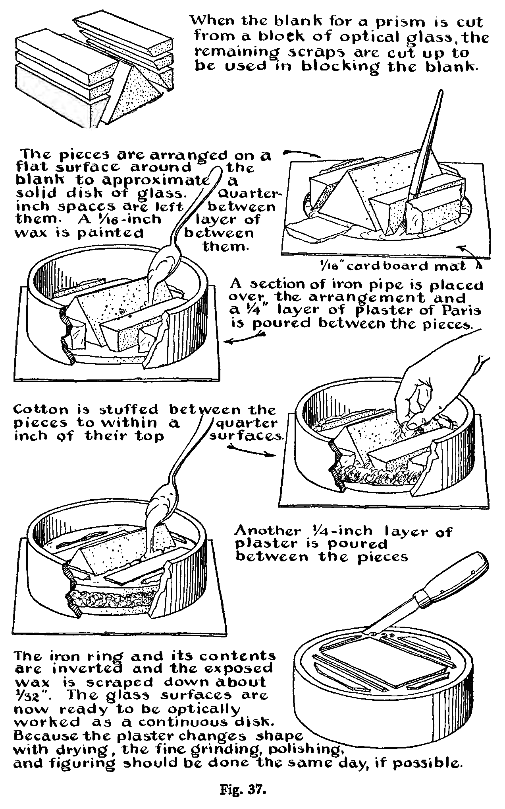
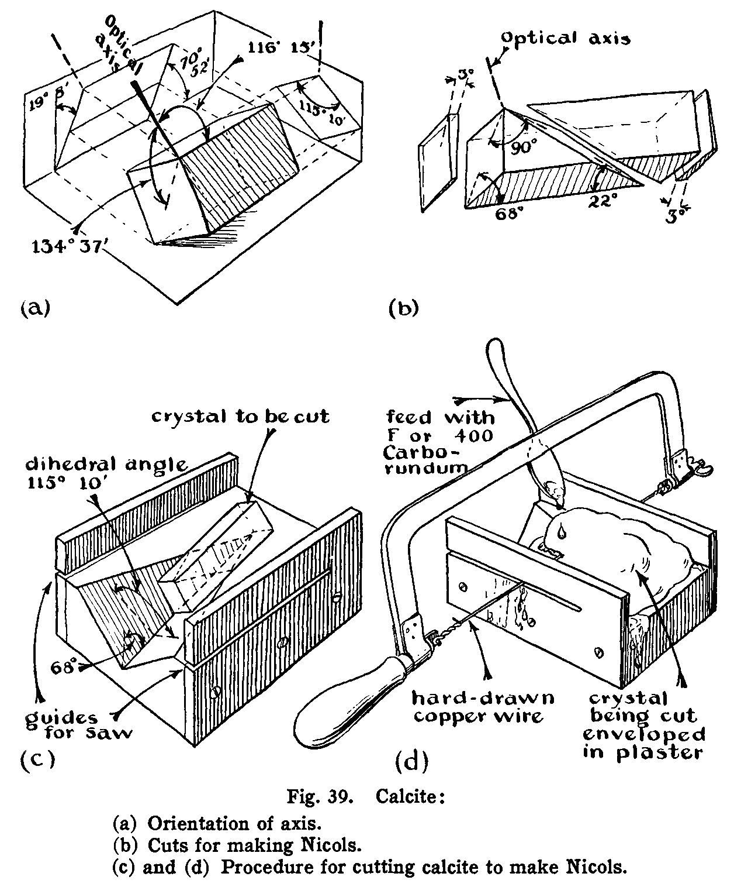
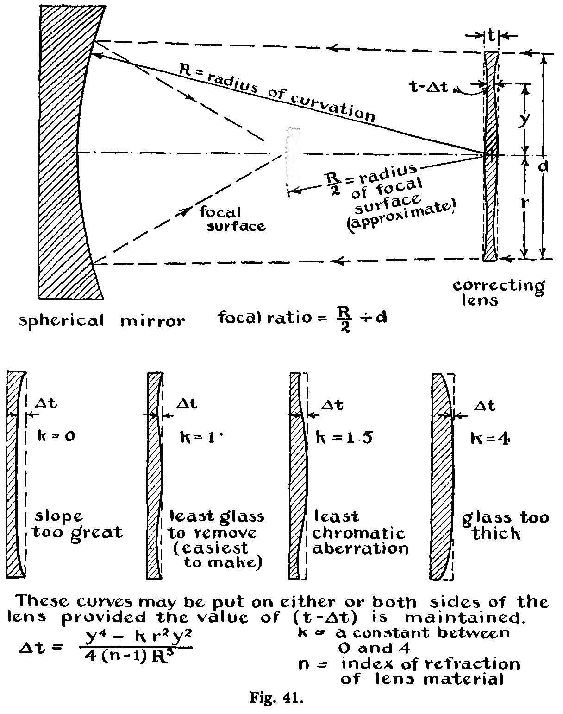

In this chapter we will describe the technique of making the optical surfaces required for mirrors, prisms, interferometers, lenses, and so forth. The optical surfaces on these instruments are characterized by being much more accurate than ordinary machined and ground surfaces. In fact, optical tests sensitive to a few millionths of an inch are necessary to show their lack of true perfection. Since our concern here is with high-precision work, in which errors are usually less than a wave length of light, we do not include methods used for plate glass, cheap lenses, and other commercial work in which the tolerance is greater.
The technique described here is intended primarily to guide the research worker who finds it desirable or necessary to prepare his own optical surfaces.
In any case the task set before the worker is that of generating an extremely accurate polished surface. Accordingly, we will first set down the general technique involved without detailed reference to what is being made. Later we will treat of special procedures.
The glass or other material on which the optical surface is to be prepared is first roughly formed to the desired shape. For example, in the case of a lens, the first step will consist of cutting out a disk of glass. A prism will be first sawed or ground to rough dimensions from a larger block. The proposed surface itself is then generated more precisely by periods of grinding with suitable laps. The surface is ground first with coarse grits of Carborundum to conform approximately to the specifications. Then finer and finer abrasives are used until at last the grinding is terminated with the finest emery flour. The grinding is periodically interrupted for testing with a straightedge, template, micrometer, or spherometer. After fine grinding, the surface is polished with a pitch lap and rouge. Finally it is brought as near to perfection as the specifications require by "figuring," that is, by local retouching with polishing tools. The figuring is guided by delicate optical tests.
Optical grinding and polishing are alike in that both require the use of a material which is harder than the glass. This material is used in the form of loose grits or fine powder. The two operations are unlike in that the grits and powder used for grinding are worked over the surface with a hard tool, ordinarily made either of glass or cast iron, whereas polishing tools are made from a soft base material. A polishing tool for preparing precise optical surfaces is usually composed of some combination of pitch and wax as the soft base material. Paper cloth and wood are often used for polishing tools in cases in which no great precision is demanded.
The grinding process depends upon the characteristic conchoidal fracture produced when an excessively high pressure is applied to a point in the surface of the glass. The pressure exerted on the surface by a single particle of abrasive or grit, as it is rolled about between the tool and the work, builds up stress beyond the strength of the glass, resulting in the removal of a chip. This is illustrated by Fig. 1. Carborundum and emery grits are ordinarily used. The efficiency of the process depends primarily on the sharpness of the grits. Carborundum grits break down faster than emery, although they are harder than emery. Fractured Carborundum grits have sharp edges and consequently they grind fast. Ellison[1] says that Carborundum grinds about six times as fast as emery. Carborundum is used for the first coarser grades of grits, and emery for the last finer grades. Natural emery (corundum) cuts about twice as fast as synthetic emery. The corundum produces a smoother surface than either Carborundum or synthetic emery and is, accordingly, best for the final grinding. The hardness of various abrasives is indicated in Moh's extended hardness scale. (See Table I.)
From a practical point of view, we may consider that the polishing operation is a planing process.[2] The grains of abrasive appear to fix themselves automatically in the soft material of the tool, usually pitch, so that their crystal surfaces are parallel to the direction of motion of the tool and parallel to the plane of its surface. Thus a complex scraper is formed. As this moves over the glass, the height of each abrasive particle is automatically adjusted in the soft backing so that it produces a fine smooth cut. The removed glass is washed away by the liquid lubricant, usually water. The planing action starts on the peaks of the "hills" that result from the fine grinding and produces a full polish there at the first stroke. Continued operation of the polishing tool removes additional glass, so that the hills become plateaus and are finally planed down to the level of the deepest valleys. The character of the surface on any particular plateau is not improved by continued polishing - it is to be regarded as fully polished from the first stroke. This is illustrated in Fig. 2. After the whole surface becomes uniformly polished, further working with the polishing tool removes additional glass. In constructing an experimental aspheric camera lens, as much as thirty thousandths of an inch of glass has been removed by polishing.

Glass can be successfully polished with almost any fine abrasive, provided a suitable soft and yielding backing is used. For some types of work - for example, for edging mirrors where irregularities in the surface do not matter - glass is polished with a wood tool charged with Carborundum or emery. Glass may be polished with rouge, either the red oxide or the magnetic black oxide, and also with charcoal or oxide of tin. However, for ordinary optical work rouge is the most satisfactory polishing material. Surfaces of glass, quartz, speculum metal, calcite, and fluorite are best polished with rouge on a wax or pitch tool. The action of various polishing agents depends on the type of backing, whether cloth, paper, or pitch is used, on the hardness of the material being polished, and on the method of lubrication. Some agents which are indifferent polishers when used with a wax or pitch tool and lubricated with water are quite effective when used dry on a paper lap. For paper polishing, oxide of tin (putty powder) is commonly used. Chromium oxide (Cr 2 3 ) is recommended for polishing certain metals such as stainless steel which are "attacked" by rouge.
The material for the polishing tool may be a soft metal - copper, lead, or aluminum. Tools made of these metals are sometimes used for polishing thin specimens of minerals which are to be examined with the microscope. Levigated alumina is usually employed as abrasive for work of this type.
The polishing tools used in precision optical work are made of pitch or pitch and wax compounds, in contrast with cloth or paper-faced tools used on some commercial products. Glass is polished with surprising rapidity on a cloth polisher, but it exhibits a peculiar grainy "lemon-peel" surface. This method of polishing is generally used in the manufacture of plate glass. Paper polishers in general produce a somewhat better surface than cloth but are seldom used except for the manufacture of inexpensive lenses, such as for cheap hand magnifiers and so forth. All polishing tools of a fibrous nature produce a "lemon-peel" surface.
The technique which will form the nucleus of our first treatment is particularly suited to the making of surfaces of 3 to 6 inches in diameter or larger worked in glass or quartz. The procedures involved are fundamental and apply equally to mirrors, lenses, or prisms. The method treated here is used by D. O. Hendrix, a practicing optician associated with Mount Wilson Observatory.[3] This procedure is different in some respects from that described in the classic book on amateur telescope making by Ingalls, Porter, and Ellison.[4] For example, in their book they recommend using the tool underneath the work, while here we treat primarily of the method using the tool on top of the work.
The work, whether it is a mirror, a lens, or a prism, can often be cut to rough shape from stock plate glass with an ordinary wheel cutter, the most common form of glass cutter, which is used for cutting all kinds of polished glass in all ordinary thicknesses. The cutter is drawn across the glass surface once with sufficient pressure definitely to mark the glass. It should not be run back and forth along the same line. After the glass is "marked," it is broken by bending it away from the cut, as shown, for example, in Fig. 3. The parallel-jawed pliers, also illustrated in Fig. 3, are useful for making narrow cuts. The break may also be started by lightly tapping the glass on the back side opposite the mark with the small knob provided on the handle of the wheel cutter.

The procedure for cutting thick plate glass is to lubricate the wheel cutter with turpentine or kerosene before the cut is made. After the glass is marked, the break is started with a blunt chisel. The chisel is held firmly against the back of the glass at a point directly opposite the mark and tapped sharply with a small hammer. The edge of the chisel should be parallel to the mark. It is well to have the glass supported, cutter-mark down, on a cloth or padded surface. When the break has started, it is led along the cut with the chisel (See Fig. 4.)

Very thin glass is best cut with a diamond point especially mounted and sharpened for this purpose.[5]
If a disk is desired, the glass is first cut square, and the corners are then cut to give a polygonal piece approximating the desired shape. The rough edges may be removed by holding the glass against a rotating flat disk of cast iron fed with a mixture of Carborundum and water. (See Fig. 5.) Also, the glass disk may be waxed onto a metal plate mounted in the headstock of a lathe. As it is rotated, the edges are ground with an iron tool, which is fed with Carborundum and water as shown in Fig. 6. A light springy tool is recom mended. Oilcloth should be used to protect the lathe so that abrasive does not get into its working parts or on its ways.


A common method of cutting small disks (up to about 6 inches in diameter) from slabs of glass is by means of a "biscuit cutter." This is simply a thin-walled tube of iron or brass mounted in a drill press as shown in Fig. 7. The rotating tube is fed against the glass, Carborundum and water being applied with a spoon. Fig. 7 also shows a novel method of central feeding. To prevent chipping when the biscuit cutter goes through the glass, it is well to wax an auxiliary backing plate onto it with beeswax. Grade 60 or 90 Carborundum should be used except for fine cuts or cuts on delicate and fine work, in which case grade 120 Carborundum should be used. The cutter will cut more rapidly if instead of water a mixture of turpentine and camphor is used with the Carborundum. The proportions of the mixture should be 5 grams camphor to 1⁄2 liter turpentine.

Diagonal mirrors, such as the Newtonian diagonal for a small telescope, may be cut out of a larger figured flat mirror with the biscuit cutter. The larger mirror is mounted in the drill press at an angle of 45° and cemented with beeswax on a backing of plate glass. It is cut in the manner shown in Fig. 8. Usually the front of the flat is also coated with a cover glass, stuck on with beeswax, to prevent scratching the figured surface with the abrasive. A mirror thus cut out may develop a slight turned-up edge. However, if the cut rim, which now has a rough ground surface, is polished with wood and Carborundum, the figure of the mirror will usually become flat again. (This is some- times called the Twyman phenomenon.)

Strips and slabs of glass are cut from a thick piece of glass stock with saws. The simplest and easiest of these to set up is the so-called "mud saw," shown in Fig. 9(a). It consists of a rotating disk of soft sheet iron fed with a mix- ture of Carborundum and water. Sometimes sugar, syrup, talc, glycerin, or bentonite (particularly good) is added to this mixture to make the Carborundum adhere to the blade and to keep the grits from settling out in the reservoir pan. The usual construction allows one edge of the saw to dip into the "mud," or Carborundum mixture, which is held in a pan below the disk. The work to be slabbed is supported on a counterbalanced table and is held against the saw with a slight pressure.

A diamond saw forms an efficient slabbing cutter. The diamond saw shown at the bottom of Fig. 9 may be made as follows: The diamonds are pulverized as shown at (b) and charged into the nicks of a circular disk prepared as shown at (c). These nicks are rolled as shown at (d) to hold the diamond powder and give the saw clearance. In operation the saw blade is lubricated and washed with water or kerosene.
Once the prism, lens, mirror, or other blank is cut out, the operations involved in grinding the curves and polishing and figuring them may be carried out either by hand or with a grinding and polishing machine. A machine like the one shown in Fig. 10, a so-called modified Draper machine, is suitable.

The tool is moved laterally by the modified Draper machine in a thin oval stroke across the face of the work. The amplitude of this stroke is controlled by adjustment of the throw of the crank. The stroke can be arranged by movement of an adjustable guide so that it is either diametral or chordal in respect to the work. The tool may be allowed to rotate freely, or it may be driven by a belt. Also, the tool may be loaded to increase its pressure, or it may be counterbalanced to decrease its pressure on the work. The table on which the work is mounted is power driven to rotate about 2 r.p.m.
It is very important to support the work properly, or it will develop astigmatism, the anathema of optical work.
The first requisite is to have the modified Draper machine table turned and lapped 0.001 to 0.003 inch concave, depending on the size. It is then covered with a layer of thin felt and oilcloth as shown at the bottom of Fig. 10. This supports the glass uniformly on its flat bottom side and effectively prevents flexure during all of the operations. When the second surface of a lens is being worked, the plane concave glass tool that was used in the fine grinding of the first face is used to support the work on the grinding table. The tool is first mounted on the table concave side up. Then it is covered with felt and the lens is laid on it.
The work is supported laterally on the table by three edge arcs, which should fit neatly to the edge of the blank without exerting any pressure on it except as is necessary to balance lateral forces produced by the action of the tool. The work is moved around in the edge supports from time to time during grinding and polishing to distribute the effect of these forces uniformly around the periphery of the mirror, to avoid the introduction of astigmatism.
The work, if it is a mirror or lens, is prepared by having its face and back fine-ground and made parallel with a rotating cast-iron lap used with loose grits as shown in Fig. 5. The edges are then ground round and lightly beveled. Finally, the edges are polished with a wood tool and fine Carborundum grains.
Grinding the curve in the work. Full-size grinding tools of tough metal such as copper, brass, or soft iron, when turned to a definite radius of curvature, will reproduce this radius in the glass. The soft metal surface becomes charged with abrasive and is not worn appreciably when it is used on a brittle material such as glass. On the other hand, cast-iron tools change slowly during grinding, and glass tools change at approximately the same rate as the work.
The traditional way of making a 6-inch mirror by hand is to use two equal disks of glass, one as the work and the other as a grinding tool. The grinding is accomplished as shown in Fig. 11 with the work mounted on a firm pedestal, the height of which is optional. The optician walks around it as he strokes the work with the tool. Pressure is applied to the center of the tool with the thumb of the right hand. The tool is rotated with the fingers in a counterclockwise direction as it is stroked across the right side of the work. When a chordal stroke is used, the upper disk becomes concave and the lower convex. By this means a certain amount of control is given the operator. He may continue grinding, increasing the curvature in the surfaces all the time, until the desired result is attained. If he wishes to decrease the curvature, he will place the tool below and stroke it with the work. Or he may periodically reverse the relative positions of the two disks if he wishes to hold the surfaces fairly flat or constant in radius of curvature. When it is desired to hold the curvature constant, a diametral rather than a chordal stroke is used.
On the modified Draper machine, the grinding of a mirror to a definite radius of curvature is effected with a small tool. Concave curves are cut in the glass with a 1⁄3-size tool stroking the work across its center. A convex curvature is generated by a sub-diameter tool stroked across a chord of the work. Although a convex curvature will be generated if a full-size tool is stroked across the center of the work (diametral stroke), it becomes convex more rapidly when a chordal stroke is used. The rate at which the curvature changes is proportional to the amplitude of the diametral stroke or the offset of the chordal stroke.
After the work has been roughed out to the proper radius of curvature with 90, or for extreme curves 60, Carborundum, the full-size tool is used to true up the surface. The stroke used here is a thin oval across the center of the work. The amplitude used is about one third to one sixth the diameter of the work. The grinding is continued with the full-size tool until the tool and work are spherical. This is indicated by the quality of the fit between the tool and the work, which can be tested with a pencil mark made on the work. This procedure may produce scratches. A circular template is often made of the required radius and the work is ground until it fits this template. Spherometers are also used to test the work for sphericity. When the work is spherical, the spherometer reading, d, the radius of curvature of the work, R, and the radius of the circle containing the spherometer legs, r, are related as follows:

The spherical surfaces obtainable by grinding are so good, in fact, that opticians who worked before testing methods were developed as they are today hesitated to polish the grinding pits entirely away, since they formed a convenient "landmark" to which to refer the figure.
To grind deep curves like those required for an 1⁄f Schmidt camera, one puts a band around the edge of the mirror and covers its face with a layer of Carborundum grits. The band holds the grits on the mirror. As the work slowly rotates, a fast rotating sub-diameter cast-iron ring tool is reciprocated diametrically, or nearly so, across its surface in a thin oval stroke. The amplitude of the stroke is adjusted so that the ring tool comes to the edge of the work at the extremes of the stroke.
Final grinding in all cases should be carried out with a glass grinding tool. Glass is used rather than metal in order to have the tool change at approximately the same rate as the work, thus insuring a more perfect fit at all times between the tool and the work. The tool may be a glass disk formed as a complement of the work; that is, if the work is a convex spherical surface of radius R, the tool will be a concave sphere of almost exactly the same radius. Or the tool may be a plate of glass cemented to a metal backing. It is well to cut the grinding tool with one or more decentered grooves as shown in Fig. 12 in order to prevent suction, facilitate the access of grinding compound to all parts of the tool, and insure that the tool grinds slightly faster than the work. These grooves may be cut into the glass with the diamond or mud saw.

For large mirrors, glass disks or squares can be cemented to a convex or concave iron backing as is illustrated in Fig. 12.
The radius of curvature of the work, R, is determined by means of a spherometer or more simply by a template cut from metal. The latter can be cut with a sharp steel point (sharpened like a brass turning tool) mounted on the end of a board of length R and pivoted at the other end on a nail. For fiats a good straightedge may be used as a template.
Fine grinding. After the proper radius is attained and the work has been trued up with the full-size tool, the optician passes successively to grades 150, F, 400, and 600 Carborundum. The full-size tool, loaded to a pressure of about 0.5 lb/square inch, is used. For a 6-inch mirror about a teaspoonful of grits is applied at a time. Each application of grits, applied with one or two spoonfuls of water, is allowed to grind until the gritty cutting sound, which is heard at first, has softened. For a 6-inch mirror, grits are repeatedly added until the work has been ground a total time of 30 minutes (or 1 hour by hand). After a half-hour of grinding with one grade of Carborundum, the optician passes on to the next grade, and finally, after the 600 grade Carborundum, finishes with two grades of emery, 3021⁄2 and 3031⁄2. The work, the table of the machine, and the tool should be thoroughly washed after finishing with each grade of abrasive.
Carborundum grits as obtained commercially are well graded and do not need to be washed. However, the emeries must be washed each time they are used. The washing procedure is as follows : Put emery to a depth of 1 inch in a quart Mason jar, fill the jar with water, stir, and let settle for 10 seconds. Decant the suspended emery off to a second clean jar and discard the residue. After 10 seconds in the second jar, decant again, and repeat the operation a third time. After this, the settling time is increased to a minute to yield a residue which we will designate as residue A. The liquid over this is decanted into a clean jar, in which it is allowed to settle until it is clear, yielding residue B. The liquid over B is then put back over residue A, stirred, allowed to stand for 1 minute, and then added again to B. This is repeated several times to transfer a large fraction of the emery from A into B. Residue B, when mixed with an equal volume of powdered washed talc, is ready to be used for grinding. The talc serves as a lubricant and prevents sticking of the tool. The talc must be washed in the same manner as the emery was washed to free it of metallic iron.
The final grinding with the two grades of emery will yield a surface which exhibits specular reflection of white light at grazing incidence. At a steeper angle the reflected image is red. In fact, specular reflection of the red part of the spectrum up to a grazing angle of about 12° may be obtained. The maximum grazing angle of specular reflection affords a simple test of the quality of the fine-ground surface. A clear filament lamp should be used as a light source for this test, and when the surface gives a reflection at a grazing angle of about 12°, the work is ready to be polished.
When it is required to have the center of the mirror perforated, the necessary hole is usually cut with the "biscuit cutter" before the grinding is started. The plug is then fastened back in place with plaster of Paris. The plug is left in place until the figuring is finished.
Polishing pitch should have the following properties: It should flow slightly at ordinary room temperature; it should trim easily with a sharp knife; and, further, it should not lose its "temper" by evaporation of volatile oils. A compound which conforms to these specifications quite well is made up as follows:
| Coal tar (melting point 170° to 180° F.) | 2 lbs. |
| Pine tar (Mefford Chemical Company) | 4 liquid oz. |
| Beeswax | 1⁄2 to 1 oz. |
| Venice turpentine | not more than about 2 or 3 cc. |
The tar is melted and the other ingredients are added in the order listed.
The function of the turpentine is to adjust the final "temper" of the pitch. More or less turpentine is added, depending on whether a hard or soft pitch is desired. Before adding the turpentine and after each addition, test the pitch for temper. The simple method of performing this test is to chew a small sample of the pitch after chilling it by pouring it out on a cold glass surface. At body temperature, so-called "soft" pitch can be chewed, while "hard" pitch cracks under the pressure of the teeth. Furthermore, hard-pitch tools stored face up will show evidence of flow in the sides of the groove in about a week. A soft tool exhibits flow after standing a day. Polishing pitch does not attain its final hardness on cooling but continues to harden for a day or more. This is a sort of "jelling" process, which must be taken into account.
After the correct mixing temper is attained, pitch is filtered to remove small sticks or other hard particles. The hot pitch is poured through a cheesecloth filter supported on an iron ring. Two layers of cheesecloth are adequate to hold back harmful impurities.
Polishing tools of 6 inches in diameter or less are made by simply pouring the melted pitch compound over a support to a depth of about 3⁄8 inch. After the pitch has cooled, it is channeled by cutting it with a hot knife so that the surface is divided into a decentered system of square facets of uniform size. These facets are later trimmed in the manner shown in Fig. 13. Tools having bubbles in the pitch cause no trouble unless it happens that the bubbles occur in a definite zone on a full-size tool that is to be worked over the mirror or lens with a short stroke. In order to avoid a zone of bubbles, the pitch is cast by pouring it onto the support at one edge rather than at the center.
There are two methods of accommodating the tools to the different working conditions of summer and winter: By one, the formula is changed, the pitch being tempered with more turpentine for cooler weather; by the other, the size of the facets is changed. The facets are made smaller in cooler weather. When the formula given above is used, the facets should be about 1 inch square for temperatures above 75° F. and about 1⁄2 to 2⁄3 inch square for temperatures below 75° F.
If the polisher is to be used on soft or easily scratched material, such as speculum metal, it is advisable to use harder pitch and to have the facets narrow. The channels allow the pitch to flow evenly and also allow the rouge and water free access to all parts of the work. For speculum metal it is recommended that the facets be 1⁄32to 1⁄16 inch wide and 3⁄4 inch long.
To construct a polishing tool of relatively short radius, the pitch facets are first cast in a suitable mold in the form of sticks. (See Fig. 14.) These are then cut into squares and fastened to the metal tool as shown in Fig. 15.
 


After the tool has been faceted, it is warmed and pressed to the work, with soap in a 25 per cent glycerin solution as a lubricant on the work to prevent sticking. The pressing operation is illustrated in Fig. 16. The tool is gently warmed over a hot plate until the pitch is soft. Then it is applied to the work, wet with a mixture of soap and glycerin, and left to cool. This procedure yields an intimate contact between the tool and the work. Tools for flats may be first turned in the lathe before they are pressed. After pressing the pitch tool, it is advisable to wash it in cold water and also wash and dry the work to remove the soap and glycerin.

Polishing is carried out on the table of the modified Draper machine in the same manner as grinding, except that the polishing tool is usually allowed free rotation. Rouge and water is added to the work from time to time near the edge of the tool with an eye dropper. The rouge should be washed. The washing pro- cedure is the same as that described for washing emery or talc, except that the settling time is longer - up to one-half hour.
Hard facets in the tool may cause sharp zones to appear in the work during polishing. To avoid the effects of such surface inhomogeneities in the pitch and resultant irregularities in the cutting action of the tool, the work is "broken up"; that is, the tool is frequently (and irregularly) given a spin. The facets in the tool should form a decentered system. A diametral stroke is employed for polishing. A feature of the polishing machine which also contributes to breaking up the work is the incommensurable coupling obtained by the belt which connects the rotation of the work with the phase of the stroke. The stroke is varied from time to time from a long stroke of one fourth the diameter of the tool to a short stroke.
If the surface of a pitch polishing tool becomes so heavily charged with rouge that it appears hard and glassy, the polishing speed will be considerably reduced, and furthermore "sleeks" are liable to appear. Sleeking, or the appearance of groovelike marks on the polished surface, is probably caused by the formation of ball-shaped aggregates of rouge, wax, and perhaps glass, which plow out shallow channels in the surface. Beeswax-coated tools are particularly bothersome in this respect. One method of avoiding sleeks is to allow the tool to run nearly dry before each application of fresh rouge. The optician calls this "drying up each wet." This probably causes the surface of the tool to become quite warm, allowing the pitch surface to flow rather rapidly and to renew itself.
Large lenses and very soft materials are best polished by coating the surface of the polisher at regular periods with fresh pitch or beeswax. The polishing tool is to be coated at intervals of 1 to 3 hours. The beeswax is applied to the facets of the tool with a swab made of cheesecloth bound on a short stick. It is advisable to have the wax smoking hot and to apply as thin a coating as possible. In polishing speculum metal, which scratches rather easily, the fresh beeswax coating is to be charged with dry rouge. The rouge is applied to the facets with the tip of the finger.
When a full polish is achieved, that is, when the grinding pits are entirely removed, the work is ready for testing and figuring. A convenient and simple test for full polish is to focus sunlight on the glass surface with a lens. The focus of this lens does not heat the glass much, but light scattered by pits in the surface is quite conspicuous if the surface is not fully polished.
To avoid introducing astigmatism into the work during polishing, it is frequently rotated a fraction of a revolution with respect to the supporting table in order to distribute the effect of edge arcs symmetrically around its periphery.
Figuring is the process whereby a polished surface has its shape altered by local working with polishing tools. For example, a spherical surface is made aspheric, or undesirable zones or astigmatism is removed.
Sometimes in figuring plane parallels or prisms the effect of inhomogeneities in physical properties of the glass can be corrected (in first approximation) by slight deviations from flatness in the surfaces.
The general procedure in figuring is one of trial and error. Testing is alternated with local polishing on those areas whieh are high in reference to a desired surface.
The behavior of the polishing tool depends on its size, character of faceting, shape, and the manner in which it is manipulated on the work. There is no way in which a tool may be manipulated so that it will remove glass from a surface uniformly. Rather, each manipulation, if carried out on a perfectly fiat surface, tends to produce its own characteristic zones, which will be referred to as the cutting zones of the tool. Figs. 17 and 18 illustrate the cutting zones of some typical tools. These zones are defects in the mirror surface symmetrically positioned about the center of the work. The figuring procedure consists in testing the imperfect surface and working it with a suitable tool whose cutting zones will tend to cancel the zones revealed by the test.
Sharp zones are first "softened" with a large tool coated with soft pitch. This procedure applies both to those zones remaining from polishing and to those which may appear during the figuring. The latter are usually transition zones resulting from imperfect cancellation of a smooth zone in the work by the cutting zone of the tool. This is illustrated by Fig. 20. After the sharp zones are softened with a soft pitch tool, the optician tests again to determine the figure.
To carry the figuring farther, a satisfactory surface tangent to the "valleys" of the surface, lying wholly within the glass, is imagined, and the hills relative to this imagined surface are polished away with an appropriate tool and stroke. This cycle of testing, polishing in a manner such that the cutting zones improve the figure, testing, smoothing transition zones with a soft tool, testing, and so forth, is continued, until the necessary figure is attained.
Interpretation of the action of polishing and figuring tools. If we could assign quantitative values to all of the factors influencing the cutting action of any given tool and stroke, we could conceivably predict the cutting zone for it. However, we cannot do this; but we can describe the factors qualitatively as they are appraised in the minds of opticians.
First, the polishing tool cuts away the glass in proportion to the time the tool is passing over the glass.
Second, the tool cuts faster as the speed increases. The cutting or polishing rate is not, however, proportional to the speed at which the tool passes over the work.
Third, sections of the tool which overhang the work during a part of the stroke cut relatively faster than the sections which do not overhang the work.
Fourth, the facets of the tool which lead cut faster than following facets, because new rouge available to the leading facets is wiped away from the path of following facets.
Fifth, the tool cuts fastest where the pressure on it is greatest, everything else being equal. This accounts for the selective action of the full-size tool on high zones, which action is the basis of all figuring. It is important to give this factor careful consideration in working aspheric surfaces, in which the tool naturally works in a way that tends to return the surface to a sphere.
Figs. 17 and 18 show various shaped tools and illustrate the zones which they would ordinarily produce in a true flat surface when worked with both long and short strokes. The stroke in each case is a thin oval across the center of the work. The use of an oval stroke has an advantage over a straight reciprocating stroke in that the tool never comes to a complete stop.


It will be noted from Fig. 17 that the full-size tool makes the work more convex by an amount which increases with the length of the stroke. Intermediate-sized tools, as the f size, hardly change the over-all curvature of the work when a long stroke is used, while a short stroke with this tool makes the work more concave. Smaller tools make the work more concave.
It will be further noted that the effect of the tool in changing the over-all curvature is (except for the case noted) greater than its effect in producing cutting zones. This change of curvature is generally inconsequential, except where one is making flats or striving for a radius of curvature specified to extreme precision. Fig. 18 shows the action of ring and star polishjng tools.
The behavior of tools on short radius curves may differ considerably from their behavior on flats. Figs. 17 and 18 refer to flats.
As testing methods are not very precise and the polishing methods even less so, it is well to approach the desired surface carefully and slowly, with periods of polishing interrupted frequently for testing. This allows one continually to change the "stratagem according to the tactical situation and nature of the terrain." One should use a clock to time the work done with a given polishing tool. If a mirror is improved by a certain treatment of 20 minutes' duration and the test shows that about as much more work is required, it is advisable to continue the treatment for 10 or 15 minutes more and test again in order not to overreach the desired result. It must also be emphasized that tools may cut faster at first than later, so that the significance of the time factor should not be taken too seriously. Also, the behavior of any given tool may be erratic. It is best to try it for short periods at a time with frequent testing in order to be certain of its action. Inasmuch as the figuring procedure should not be hurried, beeswax-coated tools, which polish about three times as fast as uncoated tools, are not used for figuring. During the final stages of figuring, when delicate testing is required, the work should be allowed to stand on the testing support for sufficient time to allow complete equalization of temperatures. Pressing the tool through coarse cloth (such as an onion sack) gives many small facets in addition to the large facets. This results in quick contact of the tool to the glass and smooth action of the figuring tool from the start. (See Fig. 19.)
To avoid astigmatism, the work should be occasionally rotated on the supporting table. In addition, with small tools it is important always to work the tool around the optical surface through an integral number of revolutions.
Hard tools tend to maintain a surface spherical or flat and are useful for generating flats or mirrors which are being worked to a specified radius. On the other hand, soft tools are recommended for working aspheric surfaces. Mirrors made by amateurs may exhibit a better figure than mirrors turned out by professional workers. The reason for this lies in the fact that amateurs usually use soft tools, which produce smooth flowing zones. On the other hand, professional opticians have the skill and knowledge to remove zones quickly with harder tools. In many cases, this rapid working produces faint transition zones, which show up under the most severe testing conditions. It is character istic of the commercial optician that he will produce a figure as good as, but no better than, that which his specifications call for.

Focograms and exaggerated profile curves illustrating the manner of figuring various symmetrical defects are shown in Figs. 20, 21, 22, and 23.

The interpretation of focograms is described in a later paragraph. At the upper left of Fig. 20 we see the focogram and exaggerated profile of a mirror with turned-down edge. This is corrected as follows : A f -size tool and short stroke is used. Two cutting zones are produced. One zone is positioned where the leading edge of the tool comes to the extreme limit of the stroke, and the other is positioned where the trailing edge of the tool comes to the limit of the stroke. Besides making cutting zones, the tool has the further effect of making the figure more concave. The result is to change the full-line profile curve at the top left of the figure or the dotted profile curve at the top center to the profile exhibiting two sharp transition zones, as shown by the full curve at the top center and right. These transition zones are then smoothed off with a full-size soft tool with relieved edges (to avoid a turned-down edge), using a short stroke.
The treatment with a 5⁄6-size tool, as described above, is suitable for removing a turned-down edge from a circular flat; since the final treatment with a soft tool makes the work more convex (see Fig. 17), one can, by the judicious balance of the work done with the two tools, balance the increase in concavity produced by the first by the increase in convexity produced by the second. Fig. 20 shows the procedure applied to a spherical surface.
The sketches at the top of Fig. 21 show how a turned-up edge is turned down with a full-size soft tool.
The second series of sketches of Fig. 21 shows two methods of figuring to remove an intermediary depressed zone. The profile of the full line at the left or the dotted line in the center is changed by the indicated treatment, shown in the center, to the full-line profile in the center or the dotted-line profile at the right. In turn, this is changed by the indicated treatment to the spherical curve represented by the full-line profile at the right. In the first treatment the existing dotted profile, center, is elevated at the center and has a turned-up edge in reference to the imagined curve represented by the full-line profile. This imagined curve is realized with a sub-diameter tool. At the right the full line represents the imagined surface which is realized by removing the narrow sharp transition zones with a full-size soft tool. Inasmuch as this treatment does not change the radius of the work, it is suitable for figuring flats.

By the alternate treatment, which decreases the concavity of the mirror, the cutting zones of the soft full-size tool change the intermediary depressed zone (depressed in reference to an imagined spherical surface) to two sharp elevated zones on a second imagined spherical surface. These elevated zones are then managed with a sub-diameter soft tool as illustrated.
Two treatments for a small depressed zone near the center of the work are illustrated in the bottom series of Fig. 21. By one, the first imagined surface lying wholly under the glass surface requires the removal of an outer layer represented by the difference between the dotted starting profile in the center and the full-line final profile in the center. The next imagined surface, now a spheric one, leaves several sharp zones to be removed by the usual treatment with a full-size soft tool.
The alternate treatment goes from the primary defective surface to one with an intermediary elevated zone relative to the desired spheric surface. A chordal stroke is used. The elevated zone is removed by a second larger-size tool.
In working on small zones in large mirrors or relatively large zones in small mirrors the optician has as possible figuring tools the thumb, the fingers, and the ball and heel of his hand.
Fig. 22 shows how a narrow elevated zone may be removed with the thumb and how a depression may be removed with tools from which a facet has been removed. The thumb is used with extreme caution, applied lightly for one revolution at first, and then, if necessary, for a few more complete revolutions. There is a danger of overcompensating for the elevated zone with the cutting zone of the thumb, because small polishing tools cut very rapidly.

In testing an optical surface which has been figured by the fingers, one must allow enough time for the heat developed by the friction of the fingers to be dissipated. Even for one revolution, this heating will produce a false zone, by expansion of the glass, which may be higher than the original zone.
The top of Fig. 23 shows how a spheric mirror can be parabolized with a star tool. The focogram at the top right gives the appearance of the parabolic surface when it is tested at the center of curvature. The focogram of a parabolic profile tested at the mean center of curvature exhibits the character of a soft raised intermediary zone.

The second series of Fig. 23 shows an alternate parabolizing procedure and focograms of the appearance of the figure of the mirror, as tested at the focus, before and after the use of the method. The advantage of testing a parabolic mirror at the focus is evident: The optician works toward a uniform distribution of light over the mirror face. The advantage of testing at the focus over testing at the center of curvature is especially great when zones are being removed. Zones which are practically invisible if the mirror is ex- amined at the center of curvature become quite conspicuous when it is tested at the focus.
The last two series of Fig. 23 show procedures that may be used for hyperbolizing.
The correction of astigmatism is more difficult than the removal of central symmetric zones. Cylindrical defects and, in general, all defects which are not symmetrical about the center of the work produce astigmatism. These defects must be worked out by hand. The rule of procedure is the same as it is for zonal defects - namely, the polishing is done on the high portions of the surface. Transition zones are removed with a full-size tool in the regular manner. The simplicity of this rule must not, however, be allowed to obscure the fact that the correction of astigmatism is one of the most delicate operations required of the optician, and that aside from a knowledge of what is to be done it requires considerable manual dexterity. The tendency of tools to cut fastest near their periphery and especially where their edges come to rest is to be continually kept in mind. The complete removal of astigmatism in an optical surface is the apogee of good workmanship, while its avoidance is the result of experience.
There are many applications for optical tests besides their employment to guide figuring. For example, one may wish to know the figure of a finished spherical concave mirror, a flat, or perhaps a lens of unknown quality. Also, the testing methods described here can be used to test gratings. The Foucault knife-edge test is employed by the Schlieren-methode for photography of sound wave fronts.[6]
The simplest optical tests are interference tests using monochromatic light of wave length λ. The fringes manifest by a thin air film between optical surfaces are called Newton's fringes. They represent lines of equal optical separation of the surfaces. Between two adjacent fringes the optical thickness of the air film varies by an amount λ/2, and the fringes may be interpreted as contour lines for the surface of one glass referred to the sur- face of the other glass, which is usually a flat or spherical test surface.
The fringe system between two flats, if they are slightly inclined to each other and are illuminated with monochromatic light, is a series of parallel equispaced straight lines. A cylindric surface of long radius of curvature in contact on a line with a flat gives straight fringes of unequal spacing.
A spherical convex or concave on a flat gives concentric circles.
Fig. 24 illustrates a box for testing optical surfaces in contact with a flat and the appearance of the fringes under different conditions.
The appearance of a convex spheric or cylindric surface on a flat is the same as the appearance of a concave surface. The difference in distance between the surfaces at one fringe and at the adjacent fringe is λ/2; but the sign of the difference, that is, whether the separation is increasing or decreasing, is not known. The following rule may be employed to differentiate between a concave and a convex surface. The exhibited curved fringes expand away from their center of curvature when the head is lowered or moved away from the normal to the flat if the surface is concave, while, if it is convex, they contract toward their center of curvature.
Newton's fringes are particularly suited to making a comparison between a "flat" of unknown quality and a master flat. Also, they may be employed for testing surfaces of a definite radius by pressing them against a master plate of the same radius but opposite curvature. In this case, white light rather than monochromatic light is generally used, and deviations from the master are determined by the residual color of the interference pattern.
When precision tests are made of a "flat" against a master flat and the fringes are observed at other than normal incidence, it is necessary to have the fringes running parallel to the plane of reflection, or they will be curved, even though the work is flat. Deviations of the fringes from a straight line are estimated by comparison with a stretched wire or thread.
Haidinger's fringes are excellent for testing the quality of plane parallels. Fig. 25 shows how Haidinger's fringes are observed. The usual manner of observing Haidinger's fringes is shown at the right in Fig. 25, and the appearance of the fringes and their positioning in respect to the reflected image of the observer's eye are shown in the lower right of this figure. These fringes are arranged like the Newton's fringes produced by a sphere on a plane. They are different in that Newton's fringes are observed by focusing the eye on the thin air film between the plane and sphere, whereas Haidinger's fringes are observed at infinity either with the eye or with a telescope. Newton's fringes represent the locus of points of equal optical thickness, while Haidinger's fringes represent the locus of points where rays "from the eye" make equal inclination to the plane- parallel plate. The Haidinger fringes are observed at normal incidence, and the plane-parallel plate is moved laterally to apply the test to different areas of the work. A variation of thickness, from one end of a plane parallel to the other, results in the appearance or disappearance of fringes. If the plate gets thicker, fringes appear. The appearance and disappearance of one ring corresponds to λ/2n change in thickness. For the most delicate testing, a telescope is used. A large field telescope equipped with a filar mi- crometer may be used to measure the diameter of the rings. With this telescope the appearance of about one tenth of a ring can be detected. For glass having an index of 1.5, one tenth of a ring represents a difference of thickness of 1.5 X 10~ 6 cm or approximately 0.5 X 10 -6 inch.
Another important means of examining the quality of image-forming systems of mirrors or lenses is to inspect an imaged pinhole light source. A high-power magnifier, such as a 14X Hastings triplet, is suitable for examining the image. This test is called the eyepiece test because it is essentially the test which is applied when one observes a star in the eyepiece of an astronomical telescope on a good night. The eyepiece test is the most sensitive optical test for astigmatism. The infrafocal and extra-focal images should be examined, as well as the focal image. It is advisable to record the results of this test by drawing rough distribution curves representing the light intensity along a horizontal diameter of the image. Fig. 26(a) illustrates eyepiece images for a good (though not perfect) spheric mirror tested at the center of curvature. Fig. 26(b) illustrates the eyepiece test for an overcorrected parabolic mirror tested at the center of curvature, and (c) illustrates the test applied to a mirror with very slight astigmatism.
Fig. 33 illustrates the eyepiece test in comparison with the Foucault, Ronchi, and Hartmann tests.
The Foucault knife-edge test is usually employed for the detection of central spherical aber- ration, particularly in testing work of fairly large aperture, such as lenses or mirrors used for astronomical telescopes.
The test is simplest as applied to a spherical concave surface of long radius. A small hole is pierced in thin metal sheet with a sharp needle and illuminated by means of a lamp, together with a suitable optical system.[7] This hole is located near the center of curvature of the mirror. (See Fig. 27.) Light from it is reflected by the mirror to form an image at an equal distance on the opposite side of the center of curvature. When the eye is placed behind this image so as to receive light from all parts of the mirror, the whole aperture will appear evenly illuminated. Then if an opaque screen, the so-called knife edge, is moved laterally across the focal point, the whole aperture will appear to darken evenly, that is, if the mirror is truly spherical, as in Fig. 27(ii). If the knife edge is moved across the cone of light a short distance inside the focus, its shadow, as it appears on the mirror, moves in the same direction as the knife edge, Fig. 27 (i); if it is placed outside the focus, the shadow moves in the opposite direction, Fig. 27(iii). It is possible by this means to locate the focus of the mirror with great precision.

In the case of an imperfect mirror, such as the one shown in Fig. 27 (iv), all rays do not converge to a single point, and if the knife edge intercepts the converging light rays as re- flected from the mirror, the aperture will appear to be unequally illuminated; some rays are completely cut off by the knife edge, whereas others pass by it and so reach the eye. The mirror shown at the right has an intermediary raised zone. For the inside half of the zone (c) the focal length is shorter than it is for the outside half (b). With the knife edge advanced into the mean focus of the converging rays, those rays from the areas which have their center of curvature exactly at the position of the knife edge are attenuated; rays from (c) reach the eye without attenuation, while rays from (b) are cut off entirely by the knife edge. Accordingly, (c) and (b) appear very bright and dark respectively.
The appearance of the mirror with the knife edge and eye in the positions indicated is as if it were made of plaster and illuminated at grazing incidence with an imaginary light source.[8] Usually the pinhole source is on the right side of the center of curvature and the eye on the left. In this case, if the knife edge cuts the image from left to right, the observer, thinking of this imaginary light source as illuminating the plaster disk from the right, interprets its shadows in accordance with their apparent inclination. For a lens, the observer interprets the shadows by thinking of the illumination as coming from the left.
Various more complicated setups for making the Foucault test are shown in Figs. 28 and 29. In these two figures a test mirror or lens of unquestioned quality (or at least of known quality) is shown clear, while the tested mirror or lens is cross-hatched.
Aspherical mirrors, such as paraboloidal ones, can be tested at their mean center of curvature without an auxiliary testing flat by measuring the radii of curvature of the glass at various zones. The mirror is covered with a diaphragm of cardboard with holes opposite the zones to be tested. The simplest diaphragm has holes at the center, at the edge, and at 0.707 of the radius, as illustrated in Fig. 30. If the mirror is parabolic, the characteristic shadow shown in the upper right of Fig. 23 will appear when the mirror is viewed without the diaphragm. With the diaphragm, the measured difference in focus of the center and the zone at the rim will be r2/2R, where R is the mean radius of curvature of the mirror and r the radius of the mirror. This test is suitable for testing small mirrors to determine when a raised intermediary zone, as illustrated in Fig. 23, is carried sufficiently far, to parabolize the mirror.
Diaphragms for very large parabolic mirrors, or mirrors of focal ratio of f/4.5 or greater, are constructed so that the radius of curvature of a large number of zones can be measured. Ordinarily, mirrors of aperture //10 or less need not be parabolized unless their diameter is greater than 24 inches.
Another procedure for quantitative application of the knife-edge setup has been described by E. Gaviola.[9] By this procedure the inclination of different zones is determined relative to a mean surface for the mirror by measuring the position of the knife edge which intersects the light rays reflected from these zones.
In any knife-edge setup, and especially where accurate quantitative zonal measurements are to be made, it is important to avoid parallax. Although a setup like the one shown in Fig. 27, using a simple pinhole and knife, is suitable for qualitative tests on small mirrors of long radius, a more elaborate setup is usually required.
Parallax appears whenever a Foucault test is made on more than one mirror, such as a test on a parabolic mirror at its focus with an auxiliary flat. (See Fig. 28.) This parallax is due to the fact that a ray from the pinhole strikes the parabolic mirror at one point and is subsequently reflected, after returning from the flat, at a different point on the parabolic mirror. The displacement between these points on the paraboloid mirror is somewhat less than the displacement between the pinhole and the knife edge. Even so, the displacement may be sufficient to yield results that are quite misleading. As a result of parallax one does not get an indication of the character of the mirror at either of the two indicated points but rather a kind of average for the two points. This information is of little value and may be quite misleading if the effect of errors at one point of the parabolic mirror is compensated by opposite errors at the other.
A knife-edge testing device is illustrated in Fig. 31. Fig. 32 shows two attachments for it which may be used to avoid parallax. The device at the left eliminates parallax by eliminating the displacement between the knife edge and the pinhole - a virtual image of the pinhole formed by means of a half-silvered pellicle mirror lies exactly on the knife edge. A pellicle mirror is made by flowing lacquer on an inclined glass plate. After the lacquer is hard, it is stripped off the glass under water. The film of lacquer is then mounted on the flat surface of a brass frame and half-silvered by the evaporation process.
The device at the right uses a slit instead of a pinhole. This device avoids parallax by the simple expedient of removing it by half a revolution in azimuth from the testing diameter.
The Ronchi test will be treated here only briefly, since it is not widely employed and its interpretation is not simple.[10] A small light source illuminates the mirror through a ruled surface (about 100 lines per inch), and the image is also formed through another section of the same ruled surface. For comparison, the Foucault test of a defective mirror is shown at the top of Fig. 33. Below, we have the results of the eyepiece test and Ronchi test of the same mirror, and, at the bottom, the Hartmann test is illustrated. Fig. 34 shows a simple quick way of testing a lens with the Ronchi screen. A good lens gives straight Ronchi lines.
Hartmann's test is similar to the Ronchi test for a lens, illustrated in Fig. 34. A diaphragm, such as the one shown at the bottom left of Fig. 33, is prepared with several appropriately spaced holes. This diaphragm is placed directly in front of the mirror or lens. The Foucault test determines errors in the mirror by the lateral positioning, relative to their neighbors, of various rays as they pass through the focus; the Hartmann test determines the positions of these rays, relative to their neighbors, at points either inside the focus at (e) or outside of the focus at (f). The relative position of the holes in the plate and the appearance of the rays, as observed with the eyepiece at (e) and (f), are shown in the figure.[11]
The advantages of the Hartmann test over the others illustrated in Fig. 33 are that it is not necessary to locate the mean focus, and that the results of the test are easily recorded photographically, both of which features make it particularly useful for figuring lenses for the ultraviolet region of the spectrum.
In the more complicated testing setups shown in Figs. 28 and 29 it is often quite difficult to get the mirrors or lenses lined up. The appearance of coma in the eyepiece image, however, can be used to advantage for this. The coma of a system not properly lined up is quite strong and indicates clearly in what direction the mirrors are to be adjusted to get round images.
Some opticians put two white threads at right angles to each other across the face of one of the mirrors. When these threads and all of the secondary images of them viewed from the focus appear symmetrical, the system is in alignment.
As we have already pointed out, the optician's task is defined as the generation of accurate surfaces on mirrors, lenses, prisms, and so forth, which possess a high polish. This is ordinarily done by hand or with the modified Draper machine, as described before. Or it may be done with a high-speed hand-lever machine in the manner described below. The procedure with a modified Draper machine or by hand is slow, but it yields the most accurate results. The modified Draper machine illustrated in Fig. 10 uses a single crank and allows for counterbalancing of the tool, automatic control of the tool, slow smooth stroking, and easy placement of the work. In contrast with this, the hand-lever machine shown in Fig. 35 features high speed and simplicity. The spindle is run at about 100 to 600 r.p.m. Naturally, the heat thus generated, as well as the high speeds of cutting, makes work of the highest precision impossible.
The tool used with the hand-lever machine may be attached to a high-speed spindle as shown in Fig. 35, or the work may be attached with wax to the spindle and the tool applied above. In the former case, a socket for the pivot point of the hand lever is waxed to the work with a mixture of 2 parts coal-tar pitch to 1 part sieved wood ashes. When the tool is applied above, the socket is turned in the back of it. The preliminary grinding may be accomplished on the hand-lever machine with a sub-diameter ring tool of iron, as with the Draper machine. When this ring tool is moved back and forth across the center of the spinning work with a short stroke so that there is no overhang of the tool, the surface is made concave. A long stroke with overhang gives a convex surface. The tool is pivoted and allowed to spin freely, and 90 Carborundum with water is fed on it to accomplish the grinding. The growth of the curve in the work is measured with templates. These are usually cut on a lathe from a thin sheet of brass or bronze.

The final grinding is done on the hand-lever machine with a spherical brass tool of the same diameter as the work. The spherical tool is made as follows: A brass male and female part are turned on the lathe to the same curvature in the manner illustrated by Fig. 36. These are then lapped together with Carborundum to generate complementary spherical surfaces. If a lathe is not available, they may be separately ground with the hand-lever machine to an approximate fit with a third metal ring tool and then lapped together. It is important to cut a cavity in the center of the one to be used as the grinding tool. The cavity should have a diameter of about one twentieth of the tool diameter.
After the proper curve is approached in the work by grinding with the ring tool, the spherical brass tool is substituted, and the final grinding is carried out with 90, F, and 600 Carborundum and 302J emery. During the grinding process the offset of the tool in respect to the work should never be so great that the tool and the work rotate in opposite directions.
Polishing is accomplished on the hand-lever machine with rouge on a pitch lap. The brass tool used for grinding may be warmed and coated with a layer of hard pitch or pure beeswax for polishing. While the wax is still warm, it is pressed to the proper shape with the already fine-ground work (wet with soap and glycerin solution) to give a layer of pitch about 1⁄8 to 1⁄4 inch in thickness. As for grinding, this lap is cut away in the center to form a cavity of one twentieth of the tool diameter. Also, the pitch is cut to form annular grooves. These grooves facilitate contact between the pitch and the work. The pitch lap should be frequently trimmed.
If the central cavity removed is too broad, the tendency is to polish the edges first, while if the central cavity is small and pitch is trimmed off the edges of the tool, it will polish the center first. Also, whether the polish progresses faster in the center of the work or near the edge depends on the offset. A little offset favors polishing the edges fast, and a big offset makes the progress of polishing greater in the center. One can easily keep track of the progress of the polishing by shining a strong light on the work and observing the "grayness" produced by the residual grinding pits.
It is difficult to balance all these factors, and in practice one should observe how the polish progresses. If the polish is not progressing satisfactorily, the offset can be altered or the tool trimmed accordingly.
Figuring aspheric lenses on the hand-lever machine is accomplished by polishing with sub-diameter tools and star or ring tools.
Small lenses are aligned on the spindle by tilting them while the blocking wax used to cement them in place is still warm. The spindle is turned slowly, and if an object, preferably a small light source, seen reflected in the surfaces does not describe an eccentric circle as the lens rotates, the alignment is complete.
After being centered on a brass tube mounted in the headstock of the lathe, in the same manner as described above, the work is edged with an iron tool and grits. (See Fig. 6.)
Although we have emphasized the phases of procedure which are important in generating the optical surface, we have not dealt extensively with the orientation of that surface with respect to the general form of the work or with respect to other optical surfaces. These are matters usually managed in an obvious manner. However, in the construction of prisms, especially right-angle prisms and plane parallels, the manner of getting proper relationship between the two flat surfaces involved is not so obvious. A half-hour of polishing on the Draper machine or a few minutes of polish- ing on the spindle machine will usually put enough polish on ground surfaces to allow their relationship to be tested on a spectrometer table or with other optical tests. Right-angle prisms are tested by employing their property of deviating a light beam exactly 180°. This test is sensitive to about 1 minute of angle when it is made with the naked eye, and if it is made using a telescope equipped with a Gauss eyepiece, it is sensitive to about 1 second of angle.
Plane parallels are ground to be flat and parallel to about 1⁄20000 of an inch. Good micrometers are used to test the glass for parallelism to this accuracy. The final optical precision is obtained by figuring. The test using Haidinger's fringes, described before, is used to guide the figuring. Plane parallels are usually made with circular faces to be cut up later into rectangles if necessary.
Inasmuch as round glass surfaces are more easily figured than square or rectangular ones, it is advisable to mount a prism blank in a metal ring as shown in Fig. 37, together with auxiliary glasses having the same coefficient of expansion, to make up a circular array of glass surfaces. This circular array is held in the metal ring with plaster of Paris, and the ensemble is then worked as a single disk of glass. The parts may be immersed in a single thick layer of plaster, but it is best to imbed them in a double layer of plaster as shown in Fig. 37. A mixture of 3 parts plaster to 2 parts water is used. This gives an almost nonshrinking, although not very strong, cement. The work may be coated first with a thin layer of beeswax in cases where free lime or moisture in the plaster might attack the glass. After the plaster of Paris sets, its surface is shellacked to make it impervious to water. The grinding and figuring should be finished in one day. Otherwise, owing to "aging" of the plaster, the central and auxiliary surfaces will not maintain satisfactory alignment.
When optical surfaces are generated on crystals, it is frequently required to orient the surfaces precisely with respect to the crystal axes. Fig. 38 illustrates the manner in which the optical axis of quartz is precisely located. The crystal is cut at each end with the mud or diamond saw, the cuts being made roughly perpendicular to the optical axis. These parallel saw cuts are then ground with the abrasives to grade 150 Carborundum and "artificially polished" by cementing cover glasses to the ground ends with balsam. Polarized light is used to determine the optical axis in the manner illustrated in the figure. The system of rings noted through the analyzer will remain stationary when the crystal is rotated about a vertical axis if the cuts are perpendicular to the optical axis. If the rings "wobble" as the crystal is rotated, the axis of rotation is to be tilted by means of the gimbals provided (or with wedges) until the fringes are stationary during rotation. The ends are then recut, taking account of refraction (see note on the figure), and the plate retested to check the result.

When properly cut quartz crystal is rotated in a clockwise direction, the rings close in toward the center if the crystal is left-handed quartz and move out if it is right-handed quartz.
An irregular piece of quartz can be roughly examined for striae by immersion in a tank filled with a solution composed of 80 per cent ethyl cinnamate and 20 per cent xylol (by volume). Iron oxide surface stains may be removed from the crystal by washing in oxalic acid solution.
The orientation of the principal axis of calcite is shown at the top of Fig. 39. To cut calcite for making Nicols, the crystal is oriented and mounted in a wooden form having the cutting plane defined by a preliminary saw cut. The cut through the crystal is made by hand by sawing through both plaster and crystal with a hard-drawn copper wire mounted in a scroll-saw frame and charged with Carborundum.
Quartz is the optician's favorite medium. Both the fused and the crystal material are ground and polished by the same procedure as glass.
Calcite crystals, especially large ones, are expensive, and in addition they are soft and easily fractured. Accordingly calcite is always worked by hand with very light pressures. All but the smaller Carborundum grains tend to produce fractures in calcite, and therefore the series F-400-600 Carborundum and 302 1⁄2 and 303 1⁄2 emery is recommended for working it. If prisms with very thin edges are to be made, 400 Carborundum is used as the coarsest grit. A beeswax-coated pitch lap is satisfactory for polishing and figuring calcite. For figuring, calcite should be blocked with calcite of the same crystal orientation.
Rock salt is polished and figured on a hard-pitch tool pressed with a glass pressing lap.[12] The desired figure is obtained with an overcorrected pressing lap, as the figure obtained on this material is usually convex with respect to that established in the tool by the pressing lap. For example, in making flats, one would use a slightly concave pressing lap (1⁄1000 of an inch in a 4-inch disk or 60-foot radius of curvature). Rouge in saturated salt solution is used to start the polishing. Fig. 40 shows the arrangement of the pitch tool which is placed below the work, and a chamois skin used for drying the work. The work is rubbed against the lap until the rouge is almost dry. It is then kept moist with the breath for the final strokes and is slipped off the tool onto the chamois to be dried. This technique should be practiced on test pieces before big work is under-taken. The first face of a prism or lens is lacquered or waxed to prevent attacks by moisture while the second face is being worked. The pitch tool is coated with beeswax. Beeswax is useful for even softer materials than rock salt, such as potassium chloride, potassium bromide, and even potassium iodide.

Perhaps the most important metal in optics is speculum metal. It is very hard, exhibits a conchoidal fracture like glass, and is worked by the same procedure, being ground with the same sequence of grits. The polishing tool should have narrow facets. It is often advantageous to do the final figuring of speculum surfaces with the metal face turned down to avoid scratching.
Stellite is also worked like glass except that longer grinding periods (two to three times that for glass) are required. Ordinarily pitch polishing tools are used with rouge or chromium oxide as polishing agent. One should try to "hold" the figure from the grinding stages until polishing is completed.
Hard steel is worked in the same manner as glass.
In grinding soft steel, a still softer metal, such as copper or lead, is used as a grinding tool.
Soft steel and hard-drawn copper are difficult to polish, but they can often be managed with a polishing tool coated with a mixture of paraffin and oxide of tin. As much oxide is added to the molten paraffin as it will take without crumbling. This mixture is applied hot with a swab to the pitch polishing lap.
If a metal tends to etch or discolor during polishing, it is advisable to try carbon as a polishing agent (charcoal ground in a ball mill and washed). Chromium oxide will often give a bright polish in cases where rouge would discolor the metal.
The very soft metals - silver, soft copper, gold, and so forth - cannot be easily surfaced by the ordinary optical methods. They become charged with the grits and refuse to grind. Silver circles are brightened by rubbing moistened cigarette ashes with the thumb back and forth in a direction parallel to the engraved lines.
The Schmidt camera is an image-forming device which combines features not possessed by any lens system, and, while it has some disadvantages, it may well prove to be a natural solution to many more instrumental problems than those to which it has already been applied.[13]
The camera has had considerable application in astronomy, particularly meteor photography and survey work of large star fields. It has been applied to stellar spectrographs, and it is believed that it will have other applications in research where extreme speed, a long spectral range, and a large field are important. Two awkward features of the Schmidt camera are its curved focal plane and the inaccessibility of the plate or film holder. The curvature of the focal surface is R/2, where R is the radius of curvature of the primary mirror. The focal surface is convex toward the sphere.
The construction of a Schmidt camera is so difficult that it should not be undertaken except by one with considerable optical experience. The following is intended primarily as a description of it.
The scheme of the instrument is shown at the top of Fig. 41. It consists of a spherical primary mirror and a Schmidt lens, which corrects the primary mirror for spherical aberration. The lens is located at the center of curvature of the spherical mirror, and its deviation from flatness is so small that no great error of achromatism is produced by the dispersion of the index of refraction of the glass from which it is made. However, as an optical figuring job this deviation is great enough to make the construction of the lens difficult. This is because the curve deviates as much from any sphere as it does from flatness, so that all the construction difficulties of making aspheric surfaces are encountered.
The Schmidt lens may have several contours, as illustrated in Fig. 41. The variation of thickness may be obtained by putting the curves entirely on one side of the plate or on both sides. The variation in the thickness At of a plate of diameter 2r, expressed as a function of the distance from the center of the plate y and the radius of curvature R of the primary spherical mirror, can be represented by any one of the family of curves:

where k may have any value between and 4.
The characteristics of some of the curves are as follows: Where k = 4, the lens is too thick; where k = 0, the slope at the edge is so steep that the construction difficulties are great; where k = 1.5, the achromatism is best; where k = 1, the slopes are moderate, the color characteristics are good, and the curve can be put half on one side of the plate and half on the other. In the case where k = 1, the curve requires the least glass to be removed.
The Schmidt lens is made of Uviol glass or even fused quartz if the camera is to be used for photography in the ultraviolet spectrum. The Schmidt camera has been made to numerical apertures as fast as f/O.6. Such a camera is much faster than a camera using a lens of corresponding aperture because there are fewer glass surfaces to penetrate, and the light losses are correspondingly less.
The Schmidt plate is ground and polished with a special ring tool. Each of the glass facets for grinding or pitch facets for polishing is mounted on a separate spring as in Fig. 42. This or a similar flexible construction of a tool is used since considerable deformability is required of it.

The curve k = 1 requires the thickness at the center to be the same as that at the edge. This is indicated when a straightedge laid across the work will touch the center but not rock on it. The minimum thickness of the plate at y = 0.707 r is determined from the thickness at the edge, and the value of At calculated from the equation. The intermediary zone is depressed by grinding until this minimum thickness corresponds with that required as measured by a micrometer.
Figuring may be guided by several testing schemes shown at the bottom of Fig. 28.
[1] Ingalls, Albert G., editor, Amateur Telescope Making, page 74. New York: Scientific American Publishing Company, 1935.
[2]For a more comprehensive treatment of the theory of polishing from a different point of view, see the following:
Lord Rayleigh, Proc. Opt. Convention, No. 1, page 73 (1905); and Scientific Papers, Vol. IV, page 542. Cambridge: The University Press, 1903.
French, J. W., "The Working of Optical Parts," Dictionary of Applied Science, Vol. IV, page 326. London: The Macmillan Company, 1923.
Finch, G. I., "The Beilby Layer," Science Progress, SI, 609 (1937).
[3]I am indebted to Mr. D. O. Hendrix for the procedures presented here.
[4]Ingalls, Albert G., editor, Amateur Telescope Making, Advanced. New York: Scientific American Publishing Company, 1937.
[5]Diamond glass cutters may be obtained from the Standard Diamond Tool Corporation, 64 West 48th Street, New York City. This company also sharpens diamond glass cutters.
[6]Topler, A., Pogg. Ann., 131, 33, 180 (1867). Wood, R. W., Physical Optics, page 93. New York: The Macmillan Company, 1934.
[7]Several layers of the thin metal sheet are laid together on an anvil, and a sharp needle is driven halfway through them. They are then separated and the one with a suitable hole is selected. Each pierced sheet has a small hole of a different size and all the holes are round.
[8]See Amateur Telescope Making, Advanced, article on Foucault's shadows by E. Gaviola, page 76.
[9]Gaviola, E., J.O.S.A., 26, 163 (1936).
[10]Anderson, J. A., and Porter, R. W., Astrophys. J., 70, 175 (1929).
[11]For further treatment of optical testing, see articles contained in Amateur Telescope Making, Advanced, and references cited therein.
[12]Brashear, John A., Proc. of Am. Assn. for Adv. of Science, 38, 166 (1885).
[13]Stromgren, B., "Das Schmidtsche Spiegelteleskop," Vierteljahrschrift der Astronomischen Gesellschaft, 70, 65 (1935). Smiley, C. H., "The Schmidt Camera," Popular Astronomy, 44, 415 (1936).